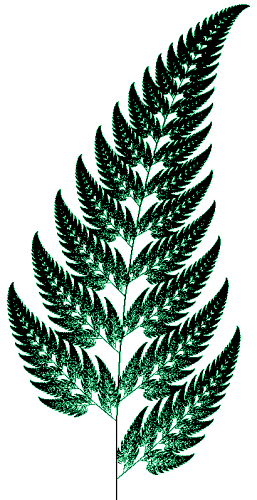

Grafika
GDI grafika
GDI alapok
Videó Grafika.doc -- Rövid összefoglaló a GDI grafikáról
GDI-ról bővebben
Toll (Pen) osztály Vonal rajzolása Téglalap rajzolása Kör (ellipszis) rajzolása Ecset (Brush) osztály Kitöltött rajzolás Sokszög rajzolás Paint esemény
IFS fraktálok - Páfránylevél rajzolása
1. videó 2. videó 3. videó 4. videó
IFS fraktl.doc -- Előadás handout Macintosh IFS manual -- Paul Bourke részletes leírása az érdeklődőknek hiddendimension.com -- További táblázatok IFS fraktálokhoz
Az algoritmus
Vegyünk a síkban egy P(x,y) pontot. Kezdetben x és y értéke legyen 0. Majd transzformáljuk a pontot az alábbiak szerint:
$$x’ = ax + by + e $$ \(y’ = cx + dy + f\)
, ahol \(x\) és \(y\) az eredeti koordináták, \(x’\) és \(y’\) a transzformáltak. Az \(a\), \(b\), \(c\), \(d\), \(e\), \(f\) betűk pedig paraméterek, melyek a transzformációt jellemzik.
A paramétereket, melyek a fraktált adják meg, egy táblázatban tároljuk. Az idodalomban előforduló klasszikus példának, a páfránynak így néz ki a táblázata:
| # | a | b | c | d | e | f | P |
|---|---|---|---|---|---|---|---|
| 1. | 0.00 | 0.00 | 0.16 | 0.00 | 0.00 | 0.00 | 1% |
| 2. | 0.85 | 0.04 | -0.04 | 0.85 | 0.00 | 1.60 | 85% |
| 3. | 0.20 | -0.26 | 0.23 | 0.22 | 0.00 | 1.60 | 7% |
| 4. | -0.15 | 0.28 | 0.26 | 0.24 | 0.00 | 0.44 | 7% |
A táblázat \(a-f\) oszlopai tömb formájában tárolva az elgépelések elkerülésére
double[,] t = {
{0,0,0.16,0,0,0},
{0.85,0.04,-0.04,0.85,0,1.60},
{0.20,-0.26,0.23,0.22,0,1.60 },
{-0.15,0.28,0.26,0.24,0,0.44 }
};
A fraktálrajzoló algoritmus mintegy 15 000-szer végrehajtja a következő műveletsort:
- választunk egy sort a táblázatból a P oszlopban szereplő valószínűséggel.
- elvégezzük a transzformációt a fenti képletbe behelyettesítve a választott sorban szereplő paramétereket és régi \(x\), \(y\) koordinátákat.
- \(x=x', y=y'\) -- a következő iterációs lépésben abból a pontból indulunk ki, ahova ebben a lépében eljutottunk.
- Az új \((x'y)\) koordinátájú pontba rajzolunk egy pontot.
Az eredményül kapott ábra néhány pixel méretű csak, ezért érdemes a kirajzolás előtt nagyítani.

Megoldás lépésről-lépésre:
Rendelj eseménykezelőt a form Paint eseményéhez! A további műveleteket ebben az eseménykezelőben valósítsd meg.
Rajzolóterület
Ahhoz, hogy rajzolni tudjunk, először szükségünk lesz egy rajzolóterületre.
- Ehhez először tárold egy
Graphicstípusú változóba a formCreateGraphicstagfüggvényének visszatérési értékét. - Majd hozz létre egy 500*500-as
Bitmaptípusú változót.
Algoritmus
Valósítsd meg a fent leírt algoritmust!
- Vegyél fel egy
xésytörtszám típusú változót. Legyen a kezdőértékük 0. - Vegyél fel egy 6 elemű törtszámokat tároló tömböt. Nem szükséges kezdőérték megadása.
- Példányosíts egy példányt a
Randomosztályból. Ezt fogjuk használni a valószínűség kezelésére. - Indíts ciklust 1 és 15 ezer között. A ciklusban:
4.1 Generálj egy véletlenszámot 0 és 1 között.
4.2 A táblázatban \(P\) oszlopban szereplő értékek összesen 100% valószínűséget adnak ki (1+85+7+7 = 100). A generált véletlenszám, ha 0,01-nél kisebb, az első sort használjuk, ennek valószínűsége 1%. Egyébként, ha 0.86-nál kisebb, akkor a második sort, ennek valószínűsége 85%, és így tovább. Töltsd be a valószínűségnek megfelelő értékeket a táblázatból a 2. lépésben deklarált tömbbe, ehhez felhasználhatod a segítségképpen fent beillesztett mintát.
4.3 Végezd el a transzformációt az
xésyváltozók értékei alapján. Mivel az y kiszámításához szükséges az x eredeti értéke, ezért a transzformáció eredményét két új változóba tárold, majd másold vissza az eredményt az x és y változókba! 4.4 A rajzoláshoz egész típusú változókra lesz szükségünk, így vegyél felrajzxésrajzynéven két int típusú változót és tárold bennük x és y kerekített, és egész számmá csonkolt változatát. 4.5 Rajzolj egy pixelt az új koordináták helyén az előzőekben létrehozott bitmapre. A szín legyenColor.Green. - A ciklus után a bitmapet rajzold ki a rajzolóterületre a
DrawImagetagfüggvény segítségével!
Transzformációk
- Futtatva a programot ehhez hasonló hibaüzenetbe ütközünk: "A paraméter értékének pozitívnak és a szélességnél (Width) kisebbnek kell lennie."
1.1 Könnyen látható, hogy lehetséges negatív érték, így
rajzxésrajzyváltozók értékét módosítsd nullára, ha értékük kisebb annál. 1.2 Szintén látható, hogy elméletileg a rajzterületünk határain túlra is nyúlhat a kiszámított koordináta, így harajzxilletverajzyb szélességénél illetve magasságánál nagyobb, akkor állítsd be számukra azt. (Figyelem, egy 500 szélességű/magasságú bitmapra 0 és 499 között lehet rajzolni.) - Ismét futtatva a programot látható, hogy a kirajzolt ábra nagyon apró. Szorozd meg
rajzxésrajzyváltozókba tárolt értéket 40-el. Az eredeti, kiszámított \(x\) és \(y\) maradjon változatlan! - Futtatva a programot most már jobban látható a páfrány, de meg kell fordítani, azaz az X tengely mentén tükrözni. Ehhez az \(y\) koordinátát kifejező
rajzyváltozó értékét kell transzformálni olyan módon, hogy az eredmény abitmapmagassága és arajzykoordináta értékének különbsége legyen. 4 Már csak az a probléma maradt, hogy a túlnyúlások kezelése okán az ábra egy része hiányzik. Ehhez egy újabb transzformációra van szükség: el kell tolni az \(x\) és \(y\) koordinátákat olyan mértékben, hogy 0<=rajzx<szélesség illetve 0<=rajzy<magasság teljesüljön a koordinátákra a rajzterületen. Ezt az egyszerűség kedvéért becsüljük meg, és a becsült eltolást adjuk a rajzx és rajzy változókhoz. Próbálgatással látható, hogy \(x\) esetén 100, \(y\) esetén -100 etolás megfelelőnek látszik.
Felhasználói felület
- A programot elindítva láthatjuk, hogy ha átméretezzük az ablakot, akkor a program újrajrajzolja a páfrányt, de az eredetit is megtartja. Töröljük a felületet mielőtt rajzolásba fogunk, a
GraphicspéldányCleartagfüggvényével. ACleartagfüggvénynek egy paramétere van: a szín, amellyel törölni szeretnénk. A Windows-beli alapértelmezett színeket aSystemColorsosztályban találjuk, az ablak alapértelmezettenSystemColors.Controlszínű. Futtatva a programot látható, hogy a páfrány újrarajzolódik, de már nem egymáson vannak az ábrák. - Szervezzük ki a rajzolást a
Form.Painteseményből egy külön tagfüggvénybe. A tagfüggvényt továbbra is meghívhatjuk aForm.Painteseményből. - Vegyünk fel egy textboxot, amiben megadhatjuk a méret szorzót. A méretezés transzformációt az ide beírt értékkel végezzük el az érték változásakor. Figyeljünk a hibakezelésre, csak akkor rajzoljuk újra az ábrát, ha a beírt érték egész szám!
Extra:
- Próbáljunk másik vezérlőtípust keresni a toolboxban, amely alkalmasabb lehet a méret megadásának céljára!
- A természetben a növények ritkán egyszínűek. Az egyes pixeleket véletlenszerűen színezzük zöld valamelyik árnyalatára!
- A komplexitás, azaz, hogy hány lépésben rajzoljuk ki a páfrányt, szintén alapvetően befolyásolja az ábránk minőségét. Oldjuk meg ezt is, a méret mintájára, egy másik vezérlővel.